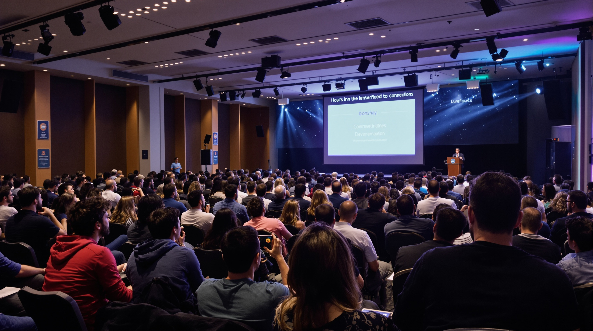
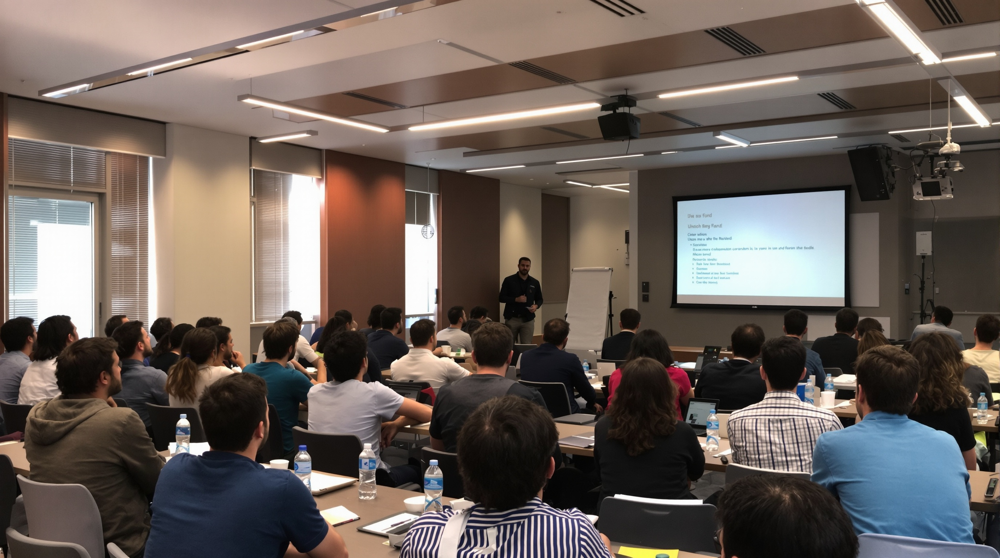

17 oktober, 2025| Göteborg
Bortom React: Bygg framtidens frontend idag
Moderna frontend-ramverk och arkitekturer
Keynote: Frontendens Tillstånd 2025 - Bortom React, Vue och Svelte:
Utforska hur frontendlandskapet förändras 2025 och vilka tekniker som tar plats bortom de klassiska ramverken React, Vue och Svelte. Seminariet ger en översikt över nya trender, verktyg och paradigm som formar webbutvecklingens framtid.
Vi går bortom specifika ramverk och fokuserar på koncept och mönster som gör dig till en mer flexibel och framtidssäker frontendutvecklare. Lär dig hur du kan kombinera olika tekniker för att skapa snabbare, mer skalbara och mer användarvänliga webblösningar.
Genom konkreta exempel och case studies visar vi hur nya frontendtrender implementeras i verkliga projekt. Seminariet ger dig inspiration och konkreta idéer som du direkt kan applicera i ditt dagliga arbete som frontendutvecklare.
Seminariet erbjuder även möjligheten att diskutera framtidens frontend med andra utvecklare och experter. Dela erfarenheter, ställ frågor och bygg nätverk som hjälper dig att ligga steget före i en snabbt föränderlig teknologivärld.
Lightning Talks: Innovationer inom utvecklarupplevelse.
Utforska hur frontendlandskapet förändras 2025 och vilka tekniker som tar plats bortom de klassiska ramverken React, Vue och Svelte. Seminariet ger en översikt över nya trender, verktyg och paradigm som formar webbutvecklingens framtid.
Vi går bortom specifika ramverk och fokuserar på koncept och mönster som gör dig till en mer flexibel och framtidssäker frontendutvecklare. Lär dig hur du kan kombinera olika tekniker för att skapa snabbare, mer skalbara och mer användarvänliga webblösningar.
Genom konkreta exempel och case studies visar vi hur nya frontendtrender implementeras i verkliga projekt. Seminariet ger dig inspiration och konkreta idéer som du direkt kan applicera i ditt dagliga arbete som frontendutvecklare.
Seminariet erbjuder även möjligheten att diskutera framtidens frontend med andra utvecklare och experter. Dela erfarenheter, ställ frågor och bygg nätverk som hjälper dig att ligga steget före i en snabbt föränderlig teknologivärld.
Workshop: Bygga skalbara frontends med React Server components.
Denna workshop ger dig hands-on erfarenhet av att bygga skalbara frontends med React Server Components. Lär dig hur du kan strukturera applikationer för bättre prestanda och enklare underhåll.
Upptäck hur React Server Components kan minska klientbelastning, optimera laddtider och göra dina frontendprojekt mer skalbara. Vi går igenom strategier som fungerar i verkliga produktionsmiljöer.
Genom konkreta kodexempel och praktiska övningar får du insikt i bästa praxis för att implementera serverkomponenter effektivt. Du lär dig hur man balanserar server- och klientlogik för maximal nytta.
Workshoppen erbjuder interaktiva sessioner där du kan ställa frågor, testa idéer och diskutera lösningar med andra frontendutvecklare. Perfekt för att fördjupa dina kunskaper och få inspiration till egna projekt.
18 oktober, 2025| Göteborg
Bortom React: Bygg framtidens frontend idag
Hands-on session som går igenom serverkomponenter, streaming och effektiva renderingsmönster
Talk: The Fast Frontend - Moderna tekniker för att optimera prestanda.
Upptäck hur moderna tekniker kan göra dina webbapplikationer snabbare än någonsin. Denna talk fokuserar på praktiska strategier och verktyg för att optimera frontendprestanda i dagens komplexa webblandskap.
Vi går igenom konkreta metoder för att förbättra laddtider, minska renderingsblockering och optimera nätverkshantering. Få insikter som du direkt kan applicera i dina egna projekt.
Vi går igenom konkreta metoder för att förbättra laddtider, minska renderingsblockering och optimera nätverkshantering. Få insikter som du direkt kan applicera i dina egna projekt.
Talken visar också hur du kan mäta och analysera prestanda för att fatta datadrivna beslut. Diskutera exempel, case studies och bästa praxis med andra utvecklare för att skapa snabbare, mer responsiva webbar.
Workschop: Från Webpack till Vite till Turbopack - Framtiden för frontend-byggverktyg.
Utforska framtidens byggverktyg för frontendutveckling i denna interaktiva workshop. Vi går igenom hur Webpack, Vite och Turbopack skiljer sig och hur de kan användas för att skapa snabba och effektiva utvecklingsmiljöer.
Lär dig hur moderna verktyg kan förbättra både utvecklarupplevelse och byggprestanda. Vi visar praktiska exempel på hur man migrerar mellan olika verktyg och optimerar byggprocessen.
Genom konkreta kodexempel och demonstrationer får du insikt i hur man sätter upp och konfigurerar dessa verktyg för olika projekt. Du lär dig hur du väljer rätt verktyg för rätt situation.
Workshoppen inkluderar diskussioner och Q&A där du kan ställa frågor, testa idéer och utbyta erfarenheter med andra frontendutvecklare. Perfekt för dig som vill ligga steget före i byggverktygslandskapet.
Lightning Talks: Innovationer inom utvecklarupplevelse.
Upplev en serie korta, högintensiva presentationer som ger en snabb överblick över de senaste innovationerna inom utvecklarupplevelse. Perfekt för frontendutvecklare som vill hålla sig uppdaterade utan långa sessioner.
Vi fokuserar på nya verktyg, arbetsflöden och metoder som gör utvecklingsprocessen snabbare, smidigare och mer produktiv. Upptäck idéer som direkt kan förbättra hur du skriver kod och samarbetar med teamet.
Varje lightning talk visar konkreta exempel från verkliga projekt där innovativa lösningar implementerats. Du får inspiration som du kan applicera direkt i dina egna frontendprojekt.
Efter varje presentation ges möjlighet till korta diskussioner och frågor. Delta, dela erfarenheter och nätverka med andra frontendutvecklare för att hitta nya perspektiv på utvecklarupplevelse.
19 oktober, 2025| Göteborg
Bygg inkluderande upplevelser med smarta designsystem
Designsystem, tillgänglighet och användarupplevelse
Keynote: Design för alla– tillgänglighet som en grundläggande frontendprincip.
Upptäck hur tillgänglighet kan integreras som en central del av frontendutveckling. Keynoten visar varför inkluderande design inte bara är en best practice, utan en nödvändighet för moderna webbapplikationer.
Vi går igenom konkreta strategier och principer för att skapa webbar som fungerar för alla användare, oavsett funktionsförmåga. Lär dig hur små förändringar kan göra stor skillnad i användarupplevelsen.
Genom exempel och demonstrationer får du insikt i verktyg, metoder och tekniker som gör det enklare att implementera tillgänglighet i dina frontendprojekt. Applicera dessa direkt i dina egna applikationer.
Keynoten öppnar för frågor och diskussioner om hur utvecklare kan arbeta proaktivt med tillgänglighet. Dela erfarenheter och få nya idéer för att bygga inkluderande webblösningar som når alla användare.
Workshop: Bygga och underhålla ett skalbart designsystem.
Denna workshop ger dig hands-on erfarenhet av att skapa och underhålla ett skalbart designsystem. Lär dig hur man bygger komponenter och riktlinjer som kan återanvändas konsekvent över hela projekt och team.
Upptäck strategier för att säkerställa att ditt designsystem växer på ett hållbart sätt. Vi går igenom hur man håller designen konsekvent och lättanpassad även när projekt och team växer.
Genom konkreta exempel och praktiska övningar får du insikt i vilka verktyg, metoder och processer som gör det enklare att implementera och underhålla ett designsystem i verkliga projekt.
Workshoppen inkluderar diskussioner, Q&A och möjligheter att testa idéer tillsammans med andra frontendutvecklare. Perfekt för att dela erfarenheter och få inspiration för egna projekt.
Talk: Prestanda med mening- optimera React-appar för alla användare.
Detta talk visar hur du kan optimera React-applikationer för att ge alla användare en snabb och smidig upplevelse. Få insikt i varför prestanda inte bara handlar om hastighet, utan även om användbarhet.
Vi går igenom praktiska tekniker för att minska laddtider, förbättra rendering och optimera komponenter. Lär dig hur du kan balansera prestanda med funktionalitet utan att kompromissa med användarupplevelsen.
Talken inkluderar exempel och metoder som hjälper dig att analysera, mäta och förbättra prestanda i React-appar. Upptäck hur moderna verktyg kan ge dig datadrivna insikter för effektiv optimering.
Efter presentationen finns möjlighet att ställa frågor och diskutera lösningar med andra frontendutvecklare. Utbyta erfarenheter och få inspiration för att skapa snabbare, mer tillgängliga och responsiva webbapplikationer.
Talk: Från komponent till helhet- skalbara mönster i modern React-arkitektur.
Detta talk utforskar hur man går från individuella komponenter till en helhetsarkitektur som är både skalbar och hållbar. Lär dig hur moderna mönster hjälper dig att strukturera större React-projekt.
Vi går igenom strategier för att organisera komponenter, hantera state och strukturera applikationer på ett sätt som gör det enklare att växa och underhålla. Perfekt för team som bygger komplexa frontend-lösningar.
Talken visar konkreta exempel på mönster och arkitekturlösningar som fungerar i verkliga React-projekt. Du får verktyg och insikter som gör det lättare att ta dina applikationer från prototyp till produktion.
Efter presentationen ges möjlighet att ställa frågor och diskutera mönster med andra frontendutvecklare. Utbyta erfarenheter och få nya perspektiv på hur man bygger skalbara, moderna React-applikationer.